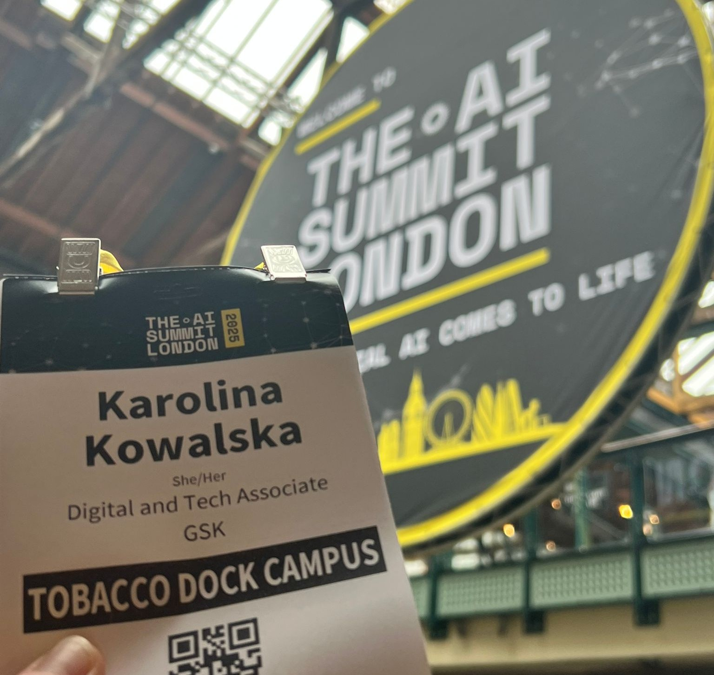

My perspectives on London AI Summit 2025: Balance Reigns Supreme
Intro
Welcome to my first blog post! As someone once said to me, it is never too late to start writing and sharing. Over time, I hope to populate my blog with lots of different entries on tech, jobs, life and coding too! :)
This post will be mostly tackling my experience at the London AI Summit. This is my second tech conference ever, after I attended the Women in Data (which from now will be referred to as WiD) conference earlier this year. I have, of course, proudly attended and presented my work at three BCS Lovelace conferences during my university years, but these conferences are of a completely different nature entirely. The AI Summit one, personally, I found much more impressive than WiD, down to the companies exhibiting and the innovation on show. I’ll explore some of my thoughts on it.

What was great
What really impressed me the most was, coming from the WiD, I felt like that one very much focused on all types of different things, mostly bound by the topic of women (it’s clear from the name after all!), which made it quite hard to stick to a common theme when reflecting back on the talks I went to. The variety of talks was also very very big, for a single-day conference. Obviously the AI summit is disruptive in the space of AI (as it once again says on the tin), but I felt like this ‘grouping’ actually made the experience much more structured.
Different talks appearing one after another on the Headline Stage actually began sounding like a conversation after an hour or two - there was a mix of panels, with both industry experts and some academics, and also lots of talks advertising products, shiny new tools, and that variety felt very refreshing.
This leads onto my next point of the balanced conversation the conference was able to convey - I was honestly shocked, coming from WiD, where tech was being hyped at every corner, deepfakes being proudly shown off right at the opening keynote (gave me a bit of a red flag-type scare), and only real warnings being touted when ‘femtech’ efforts were being discussed on stage, when the topic of discussion was directly waging war against underfunded female-specific ailments. The AI Summit felt, meanwhile, like a great clash between two viewpoints - the AI hyper and the AI skeptic - with plenty of hype and, importantly, criticism for that hype thrown around.
The contrasting opinions being presented were great to listen to, and it gave the conference a certain balance - which I will discuss in detail below as I give a short account of key learnings from talks I heard.
Key talks and key points!
IBM x Lloyds: automate vs empower
IBM’s big focus is that most AI agents are stuck in silos. Therefore, one of the first talks revolved around IBM pushing their new product, watsonx Orchestrate, to actually coordinate between different agents rather than having them work in isolation. Their aim to unite all business functions and The orchestration platform was demo’d, they announced that there was an SDK available too - natually I was overjoyed, as a proponent and enjoyer of coding. But when I went to the IBM stall, they sadly…couldn’t demo it. Very interesting to say the least.
Either way, this move made sense in the wider zeitgeist - we are getting to the point where we might not need more AI tools, but we need them to work together better.
In addition, Lloyds Bank shared their “Athena” system - what I understood to be AI support tool for customer-facing staff. They’re using it for complaint classification and auto-generating response letters. What struck me was their focus on “empowering not just automating” and heavy investment in data quality. Lloyds and IBM shared the same talk, which especially drew attention to the contrast between their strategies - replacing sales, HR and so on with agents on IBM’s part, while Lloyds aimed to empower with a focus on using what helps, not necessarily GenAI because it is the thing.
AGI and the Atomic Human
Of the entire conference though, Neil Lawrence’s talk was the standout for me. A researcher at Cambridge University, he opened up the talk with his contrarian take on AGI: it doesn’t exist. Claiming that “general intelligence” itself is a problematic, even eugenic concept. He argued that intelligence isn’t rankable - while information is fungible and rankable, human intelligence isn’t, and there is no such thing as AGI.
He continued on to explain the communication gap - humans process ~2,000 bits/min, while machines ~600 billion bits/min. When machines communicate with each other, they’re operating at light speed, but we will always be stuck at biological speeds. Therefore, according to him, the real challenge isn’t building smarter AI, it’s bridging this fundamental mismatch, or improving the information flow. He also drew on Conway’s Law in this instance, the principle of an organisation’s structure informing how they will design their products and systems, and how this metamorphosis happened with Amazon while he worked there - but genuinely, my post would be way too long if I just went on and on, so I will not pursue that thread!
His most powerful point was arguably about organizational failure. Companies go bankrupt because there’s “zero communication” - leadership, a lot of the time, endorses AI from the top while completely ignoring what workers actually need. He called out the failures of the “Marconi approach” of dropping everything to chase the latest tech without understanding the real problems.
So what is the solution? He wants us to be employee-first, rather than AI-first. Actually talk to your workers. See what they need. GenAI lets you speak to machines that access information at light speed, but if you’re only listening to CEOs, “you hear a lot of rubbish.” You need to listen to the people doing the actual work.
He also made a great point about startups versus legacy businesses - startups get all the attention but don’t deliver on essential services like education and public infrastructure. The real work happens in the background, in digital infrastructure and boring but critical processes. He said we need to care about that foundational work, not just flashy end products. Same with caring about your cleaners, your frontline workers when solving the next problem, not necessarily chasing quick money with the next GPT wrapper.
This entire talk was extremely refreshing - my eyes were glued to his slides at all times, and the talk was over before I realised. His manner of presenting was also extremely engaging! If I learned nothing, at the least he may have convinced me to purchase his book - I had never heard this sort of nuanced take, and it instantly hooked me. This was definitely a presentation to remember!
Reflections on AI + Healthcare
Later in the day, there was a panel talk discussing AI in healthcare - and what I found to be the key fact is that trust is the main blocker with integrating AI into the industry. Doctors want transparency and explainability before they’ll use AI for critical decisions (which takes me back to one of my favourite articles ever: link). Explainability, more than ever, is absolutely essential for medical AI - but so is the correct adoption strategy to convince doctors to use it. After all, these people studied for 10ish years to partake in this exact profession - while they know a lot and they too know that they know a lot, there is always a limit to how much they know. AI might just be better than some of them at some decisions, and when it does become good enough, it’s about signalling to the healthcare professionals that diagnosis could benefit from being a collaborative process.
While model performance is crucial, how you message that AI model and convince people to use it is just as important. Just because it’s good doesn’t mean people have to trust it. This applies across industries - adoption strategy matters as much as technical capability.
Conclusions
To conclude, I enjoyed this year’s AI Summit, as well as the balanced views on AI shown through some talks on the Headliner Stage. I was shown some incredible feats, as well as some marvellously pragmatist takes on the now, as well as the future, of AI.
My takeaways from it would be:
– stop asking “where can we use AI?” and start conversations instead with “what problems need solving?”,
– paying attention to the people on the floor - the key workers, the employees - and having their support when rolling out initiatives to ensure healthy uptake,
– and, a paraphrasing of one of the talks’ final lines: you don’t necessarily need a sledgehammer to screw a nail in. Sometimes a small logistic regressor is all you need to model your problem.
Thank you for reading and see you next time! :)